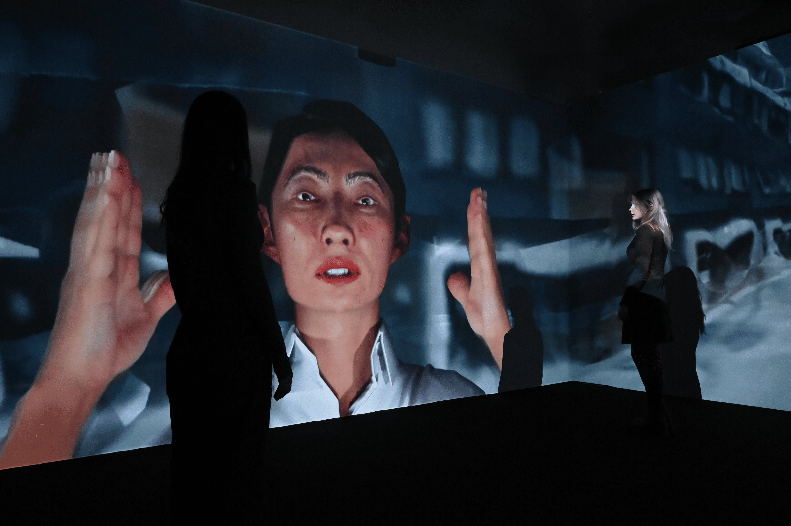
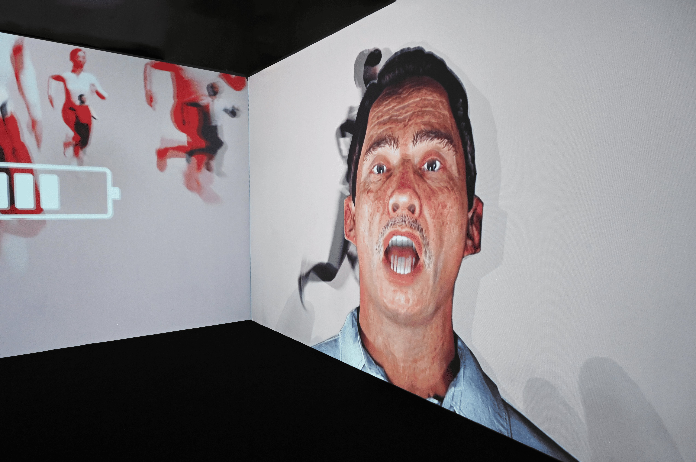
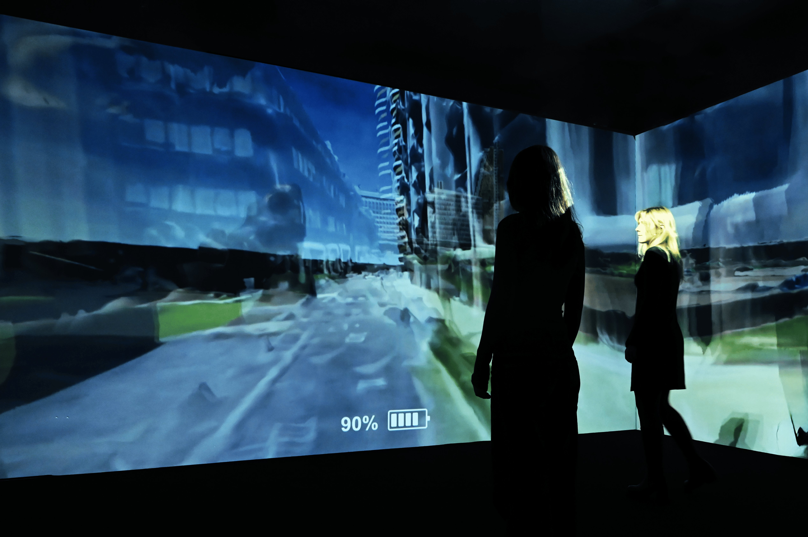
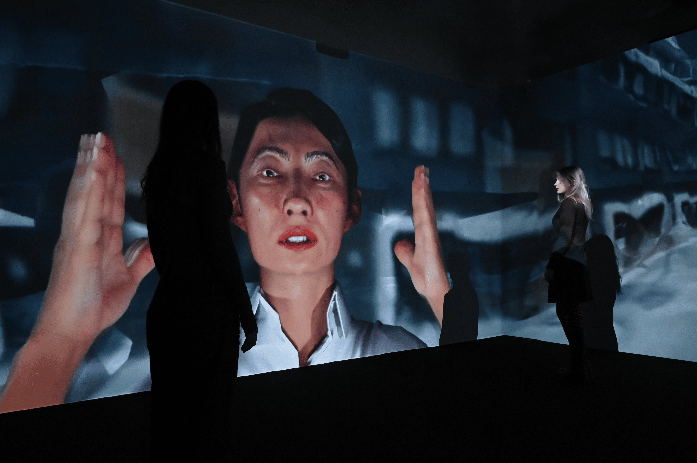
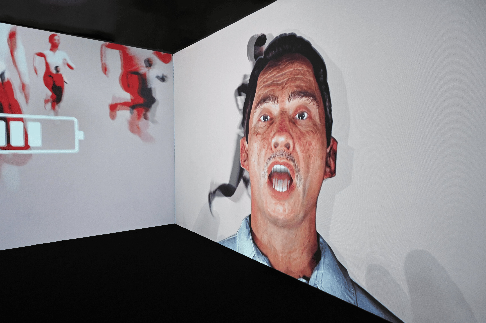
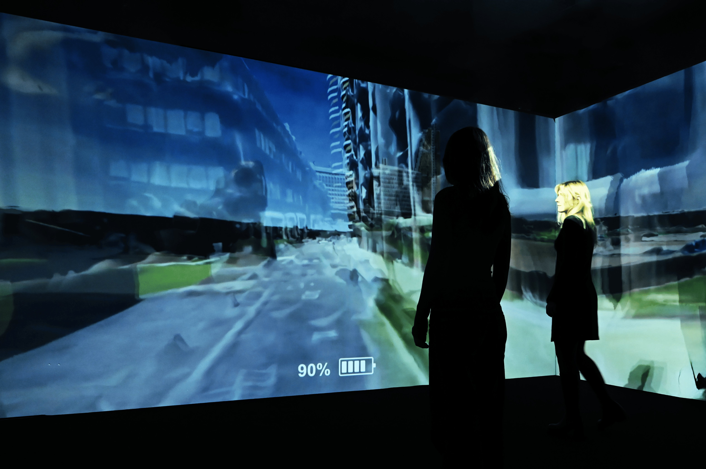

Einstein once said "everything is energy". We, as humans receive it but also create it. It'san ongoing circle of energy. But what if we were not able to receive energy the way we should anymore ? What if ourenvironment was not appropriate anymore to complete this circle?
We are over-connected to the world yet disconnected to ourselves. We perceive the energyof people around us, yet it is not filling us, it is draining our internal batteries.How many of you have felt drained out of energy, in public transportation, at work, in aweather related conversations ?
Is it getting worse and worse ?Are we running low on energy ?In this immersive experience called "Battery Low", we aim to raise awareness on thismodern social exhaustion. Our goal is to show the absurdity of our ways and maybe let youquestion how, you could take care of your own personal source of energy by changing yourdaily routine.
"Battery Low" brings you in the everyday life of AMAL (gam), an exhaustedhuman who struggles to cope with the challenges of his everyday life: stressful awakenings,transport and crowded streets and pointless conversations.
 
